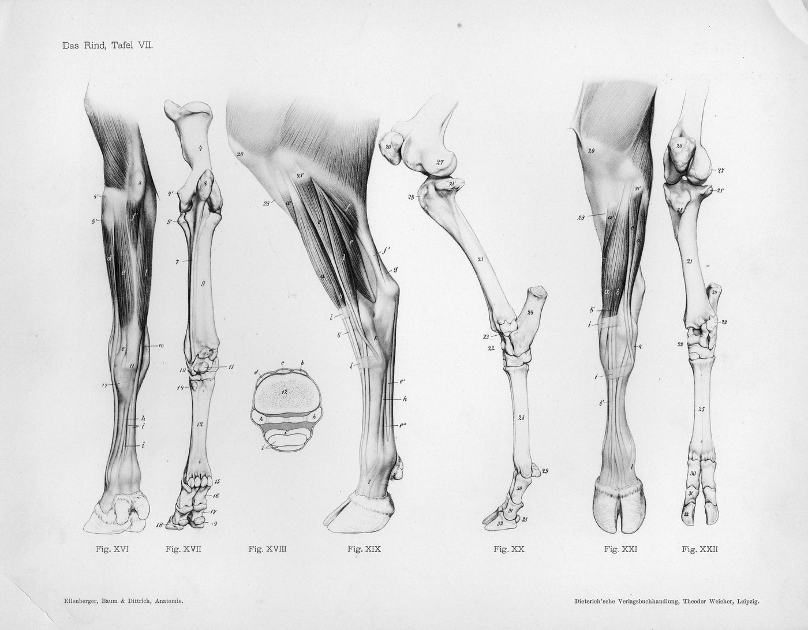

Riuscito
Viene identificata la regione del tarso e vengono spiegati due indizi.
Storie di ossa - Kit didattico
Un'indagine per identificare l'talo/astragalo nel piede, capire la sua posizione nel tarso e trasferire questo punto di riferimento ad altri mammiferi.
Versione pilota: contenuto da testare e correggere prima del rilascio finale.
Stampa consigliata: guida e correzione per adulti; scheda studente in una copia per studente; supporti da proiettare o stampare a colori. Il kit funziona anche in scala di grigi. Possibilità di stampa fronte-retro, inversione del lato lungo.
Versione: 1.0 pilota - 20 luglio 2026.
Storie di ossa - Attività 1
Guida operativa per la conduzione di un'indagine osservativa in un'aula o in un museo.
Versione pilota: contenuto da testare e correggere prima del rilascio finale.
Gli studenti osservano un osso isolato, ne descrivono i rilievi, ne cercano la posizione nel piede poi giustificano la loro localizzazione con almeno due indizi. Il confronto con la pecora o la mucca ci permette di trasferire l'punto di riferimento senza dare per scontato che le membra abbiano la stessa forma.
Viene identificata la regione del tarso e vengono spiegati due indizi.
L'area è plausibile, ma viene formulato solo un indizio.
La risposta si basa sul nome o sul caso, senza osservazione.
| Contesto | Durata | Materiale |
|---|---|---|
| Classe | 45-60 minuti | Scheda allievo, matite, materiali stampati o proiettati. |
| Museo | 30-45 minuti | Vetrina, scheletro, fotografia o replica autorizzata. |
Stampa un foglio per studente. Mantieni la correzione fuori da vista. Prepara il vocabolario: piede, tarso, talo/astragalo, giunto, indizio.
"Prima descrivi. Poi cerca. Giustifica con due indizi. »
| Tempo | Azione adulta | Azione degli studenti | Scopo |
|---|---|---|---|
| 5 minuti | Presentare l'osso senza indicarne la posizione. | Formulare le idee iniziali. | Far emergere le rappresentazioni. |
| 10 minuti | Richiedi una descrizione senza nome. | Nota dossi, cavità, superfici e simmetria. | Installa l'osservazione. |
| 10-15 minuti | Fai perquisire la regione del Tarso. | Cerchia un'area e scrivi due indizi. | Individuare e giustificare. |
| 10 minuti | Distribuisci l'animale viste. | Confrontare posizione e organizzazione dell'arto. | Trasferisci punto di riferimento. |
| 5-10 minuti | Condividere i risultati con il gruppo. | Scrivi una conclusione cauta. | Distinguere osservazione e ipotesi. |
| Bisogno | Adattamento |
|---|---|
| Aiuto | Limitare la ricerca all'area compresa tra gamba e piede; fornire la banca delle parole. |
| Alleggerisci la scrittura | Consentire una risposta orale o dettata a un pari. |
| Vai più in profondità | Confronta tre mammiferi e discuti le differenze nella postura. |
Usa il foglio come una breve stazione davanti a una finestra, una fotografia, uno scheletro o una replica. Chiedere di localizzare una regione dell'arto piuttosto che un osso isolato. Un'immagine o una replica non sostituisce completamente l'originale. Nessun oggetto del patrimonio viene gestito senza l'autorizzazione e il protocollo dell'istituzione.
Produrre una frase di output: "Individuo talo/astragalo in... perché osservo... e...". Verifica la presenza di una posizione e di due indizi.
Non dire che talo è il visibile tallone. Non utilizzare una semplice sagoma come prova di identificazione.
Gli viste di talo provengono da BodyParts3D / DBCLS. Per supporti animali si intendono le immagini anatomiche o le tavole storiche accreditate nel supporto. La placca LeConte 1922 è vecchia e non sostituisce un diagramma anatomico moderno convalidato. Questa attività introduce un metodo di osservazione; non addestra all'identificazione anatomica esperta.
Scheda e materiali pronti per una prova supervisionata. Sono ancora necessarie la correzione di bozze scientifica e didattica finale, i test con gli studenti e la stampa fisica. Si raccomanda comunque di utilizzare un moderno diagramma anatomico convalidato dal progetto.
Storie di ossa - Attività 1
Versione pilota: contenuto da testare e correggere prima del rilascio finale.
Obiettivo: impara ad osservare un osso, suggerisci una posizione e spiega cosa te lo fa pensare.
Materiale: questo foglio, una matita e il supporto per l'osservazione.
Sul supporto, punto di riferimento la zona tra la gamba e il resto del piede. Cerchia il punto in cui posizioneresti l'osso.
Scrivi ciò che è realmente visibile.
Scrivi dove potrebbe essere l'osso.
indizio 1:
indizio 2:
| Cosa è simile | Cosa cambia | Quello che devo ancora controllare |
|---|---|---|
Completa: "Individuo talo/astragalo in ____________. I miei due indizi sono ____________ e ____________. »
Un'osservazione descrive ciò che vedi. Un'ipotesi offre una spiegazione o una posizione. I due non sono la stessa cosa.
Storie di ossa - Attività 1
Per proiettare o stampare. Le didascalie e crediti devono rimanere associati alle immagini.
Versione pilota: contenuto da testare e correggere prima del rilascio finale.


Il rosso viene utilizzato solo per identificare l'osso in queste visualizzazioni. Affidatevi anche alle legende: le informazioni restano leggibili in scala di grigi.




Storie di ossa - Attività 1
Versione pilota: contenuto da testare e correggere prima del rilascio finale.
| Fase della forma | Risposta prevista | Possibile risposta | Da rivedere |
|---|---|---|---|
| Descrivi | Tre caratteristiche osservabili. | Superfici arrotondate, lisce, cavità, rilievi. | "È un osso del piede" senza descrizione. |
| Individuare | Regione del tarso, tra gamba e piede. | “Vicino alla caviglia, nel piede” se giustificato. | “Nel visibile tallone” senza sfumature. |
| Giustificare | Due indizi collegati alla proposta. | Posizione e superfici articolari. | Solo somiglianza generale. |
| Confronta | Una somiglianza e una differenza. | Osso comparabile, proporzioni diverse. | “Tutti i piedi sono uguali.” |
«Penso che l'osso sia nel tarso perché è posto tra la gamba e il piede e ha diverse superfici lisce che si articolano con altre ossa. »
"Questa zona è probabile, ma vorrei confrontarla con uno scheletro completo per verificarla. »
La scheda consente una identificazione anatomica introduttiva. Non sostituisce né la formazione anatomica né un corpus di riferimento osteologico. Il vocabolario talo/astragalo è spiegato deliberatamente; la terminologia dipende dal contesto anatomico, storico o archeologico.
Far rileggere le formulazioni finali, testare la comprensione da parte degli studenti e confermare la scelta del futuro schema anatomico del progetto.
Storie di ossa - Attività 1
Questa pagina appartiene al kit completo. Permette di utilizzare i documenti senza consultare il sito.
Versione pilota. crediti integrato; ancora necessari la correzione di bozze scientifiche, didattiche e la prova di stampa fisica. La targa del 1922 rimane chiaramente presentata come un vecchio documento.
Traduzione di lavoro: la terminologia scientifica, pedagogica e giuridica specialistica richiede una revisione umana.